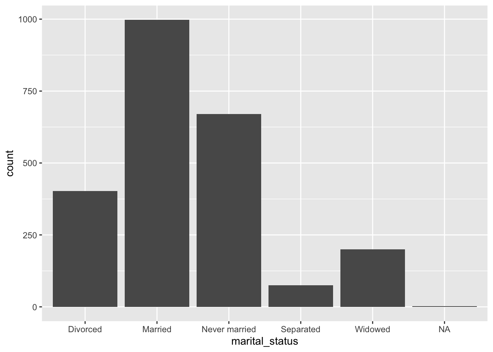
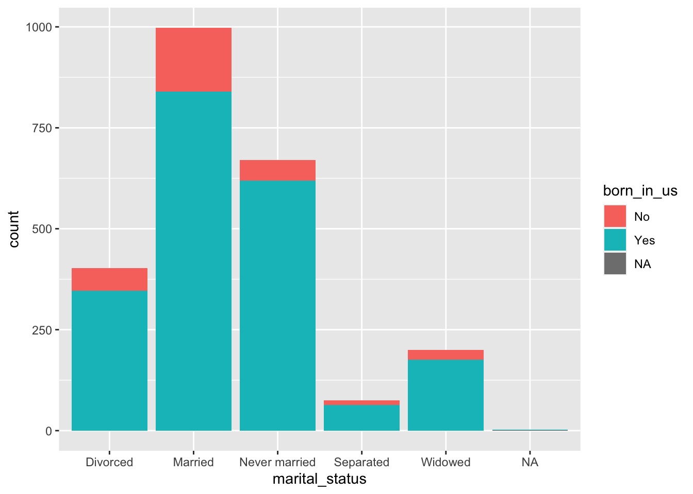
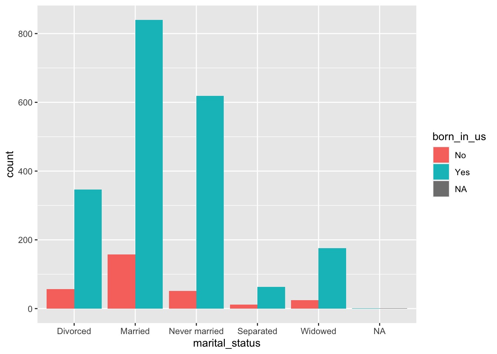
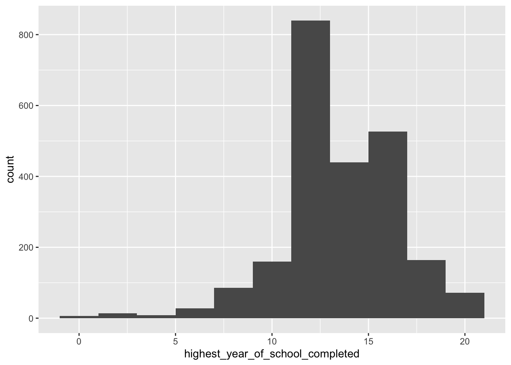
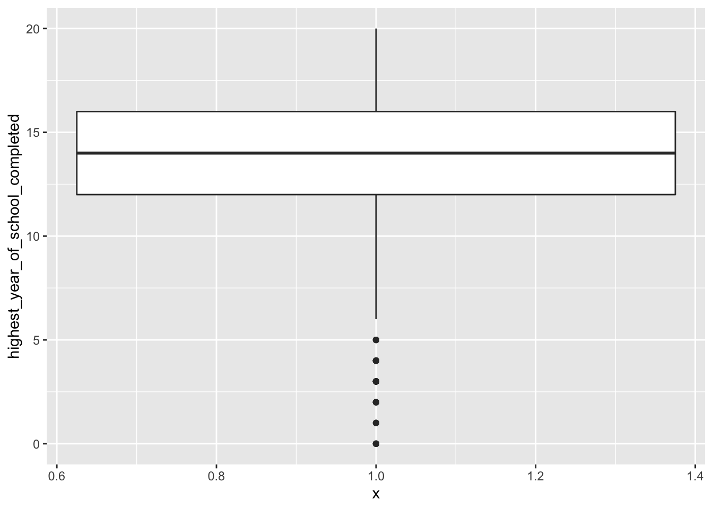
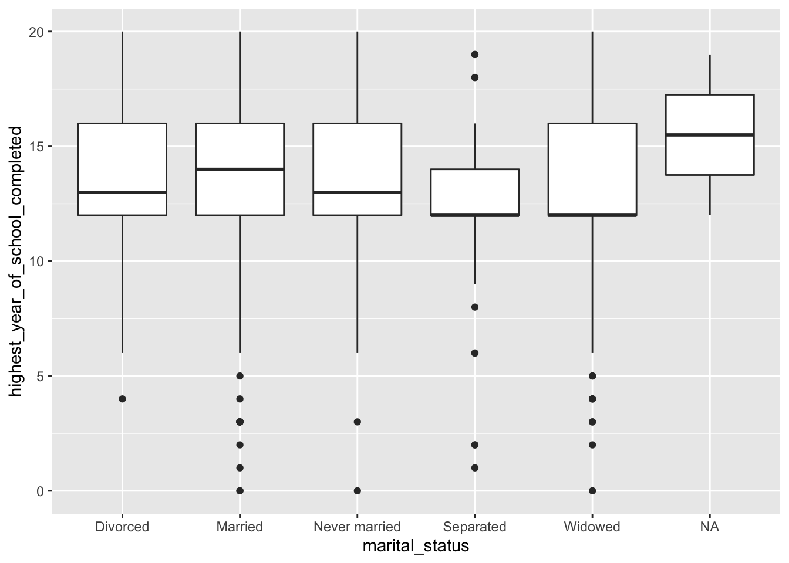
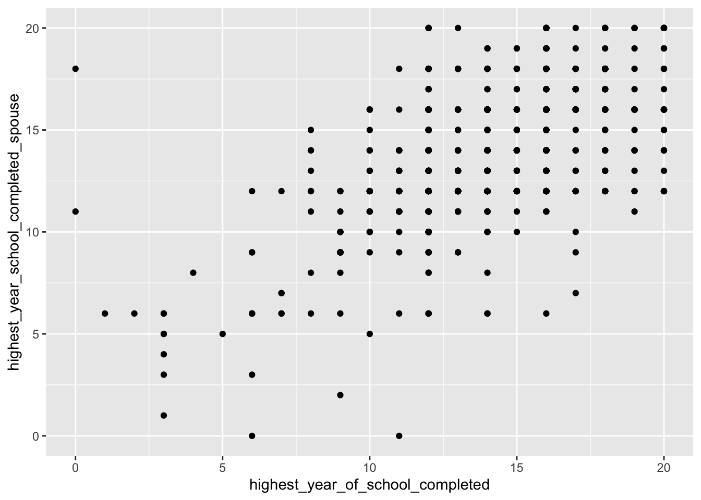

We use three packages in this course:
library(Lock5Data)
library(tidyverse)
library(infer)GSS <- read_csv("data/GSS_clean.csv")# one categorical
ggplot(GSS) + geom_bar(aes(x = marital_status))
# two categorical
ggplot(GSS) + geom_bar(aes(x = marital_status, fill = born_in_us))
ggplot(GSS) + geom_bar(aes(x = marital_status, fill = born_in_us), position = "dodge")
# one numeric
ggplot(GSS) + geom_histogram(aes(x = highest_year_of_school_completed), binwidth = 2)
ggplot(GSS) + geom_boxplot(aes(x = 1, y = highest_year_of_school_completed))
# one numeric, one categorical
ggplot(GSS) + geom_boxplot(aes(x = marital_status, y = highest_year_of_school_completed))
# two numeric
ggplot(GSS) + geom_point(aes(
x = highest_year_of_school_completed,
y = highest_year_school_completed_spouse
))
# one categorical
GSS %>%
group_by(marital_status) %>%
summarize(n = n()) %>%
mutate(prop = n / sum(n))## `summarise()` ungrouping output (override with `.groups` argument)## # A tibble: 6 x 3
## marital_status n prop
## <chr> <int> <dbl>
## 1 Divorced 403 0.172
## 2 Married 998 0.425
## 3 Never married 670 0.285
## 4 Separated 75 0.0319
## 5 Widowed 200 0.0852
## 6 <NA> 2 0.000852# two categorical
GSS %>%
group_by(marital_status, general_happiness) %>%
summarize(n = n()) %>%
mutate(prop = n / sum(n))## `summarise()` regrouping output by 'marital_status' (override with `.groups` argument)## # A tibble: 20 x 4
## # Groups: marital_status [6]
## marital_status general_happiness n prop
## <chr> <chr> <int> <dbl>
## 1 Divorced Not too happy 84 0.208
## 2 Divorced Pretty happy 242 0.600
## 3 Divorced Very happy 77 0.191
## 4 Married Not too happy 61 0.0611
## 5 Married Pretty happy 504 0.505
## 6 Married Very happy 432 0.433
## 7 Married <NA> 1 0.00100
## 8 Never married Not too happy 135 0.201
## 9 Never married Pretty happy 409 0.610
## 10 Never married Very happy 124 0.185
## 11 Never married <NA> 2 0.00299
## 12 Separated Not too happy 19 0.253
## 13 Separated Pretty happy 40 0.533
## 14 Separated Very happy 15 0.2
## 15 Separated <NA> 1 0.0133
## 16 Widowed Not too happy 37 0.185
## 17 Widowed Pretty happy 111 0.555
## 18 Widowed Very happy 52 0.26
## 19 <NA> Pretty happy 1 0.5
## 20 <NA> Very happy 1 0.5# one numeric
GSS %>%
summarize(
mean = mean(highest_year_of_school_completed, na.rm = TRUE),
median = median(highest_year_of_school_completed, na.rm = TRUE)
)## # A tibble: 1 x 2
## mean median
## <dbl> <dbl>
## 1 13.7 14GSS %>%
drop_na(highest_year_of_school_completed) %>%
summarize(
mean = mean(highest_year_of_school_completed),
median = median(highest_year_of_school_completed)
)## # A tibble: 1 x 2
## mean median
## <dbl> <dbl>
## 1 13.7 14GSS %>%
drop_na(highest_year_of_school_completed) %>%
summarize(sd(highest_year_of_school_completed))## # A tibble: 1 x 1
## `sd(highest_year_of_school_completed)`
## <dbl>
## 1 2.97GSS %>%
drop_na(highest_year_of_school_completed) %>%
summarize(
range = max(highest_year_of_school_completed) - min(highest_year_of_school_completed),
IQR = IQR(highest_year_of_school_completed)
) # range and IQR## # A tibble: 1 x 2
## range IQR
## <dbl> <dbl>
## 1 20 4GSS %>%
drop_na(highest_year_of_school_completed) %>%
summarize(
min = min(highest_year_of_school_completed),
lower_hinge = quantile(highest_year_of_school_completed, .25),
median = median(highest_year_of_school_completed),
upper_hinge = quantile(highest_year_of_school_completed, .75),
max = max(highest_year_of_school_completed)
) # five number summary## # A tibble: 1 x 5
## min lower_hinge median upper_hinge max
## <dbl> <dbl> <dbl> <dbl> <dbl>
## 1 0 12 14 16 20GSS %>%
pull(highest_year_of_school_completed) %>%
fivenum() # five number summary## [1] 0 12 14 16 20GSS %>%
summarize(correlation = cor(
x = highest_year_of_school_completed,
y = highest_year_school_completed_spouse,
use = "complete.obs"
)) # correlation## # A tibble: 1 x 1
## correlation
## <dbl>
## 1 0.596# fix NA issue
GSS <- GSS %>%
drop_na(highest_year_of_school_completed)
# turn character to numeric
GSS <- GSS %>%
mutate(Age = parse_number(age_of_respondent))
# filter observations
GSS %>%
filter(Age > 91)## # A tibble: 0 x 46
## # … with 46 variables: respondent_id_number <dbl>, number_of_children <chr>,
## # age_of_respondent <chr>, highest_year_of_school_completed <dbl>,
## # highest_year_school_completed_father <dbl>,
## # highest_year_school_completed_mother <dbl>,
## # highest_year_school_completed_spouse <dbl>, college_major_1 <chr>,
## # college_major_2 <chr>, diploma_ged_or_other <chr>, respondents_sex <chr>,
## # number_of_brothers_and_sisters <dbl>, labor_force_status <chr>,
## # number_of_hours_worked_last_week <dbl>,
## # number_of_hours_usually_work_a_week <dbl>,
## # self_emp_or_works_for_somebody <chr>, govt_or_private_employee <chr>,
## # occupation_code <chr>, marital_status <chr>, marital_type <chr>,
## # race_of_respondent <chr>, born_in_us <chr>,
## # should_govt_reduce_income_differences <chr>,
## # favor_or_oppose_death_penalty_for_murder <chr>,
## # should_marijuana_be_made_legal <chr>, rs_religious_preference <chr>,
## # specific_denomination <chr>, other_protestant_denominations <chr>,
## # general_happiness <chr>, condition_of_health <chr>,
## # is_life_exciting_or_dull <chr>, ballot_used_for_interview <chr>,
## # parks_and_recreation <chr>, mass_transportation <chr>,
## # number_of_persons_in_household <dbl>, total_family_income <chr>,
## # respondents_income <chr>, region_of_interview <chr>,
## # size_of_place_in_1000s <dbl>, political_party_affiliation <chr>,
## # think_of_self_as_liberal_or_conservative <chr>,
## # space_exploration_program <chr>, improving_protecting_environment <chr>,
## # improving_protecting_nations_health <chr>, lived_in_us <dbl>, Age <dbl># linear model
m1 <- lm(highest_year_of_school_completed ~ highest_year_school_completed_spouse,
data = GSS
)
m1 %>%
summary() # model summary##
## Call:
## lm(formula = highest_year_of_school_completed ~ highest_year_school_completed_spouse,
## data = GSS)
##
## Residuals:
## Min 1Q Median 3Q Max
## -16.5400 -1.3519 0.0242 1.4600 7.0242
##
## Coefficients:
## Estimate Std. Error t value Pr(>|t|)
## (Intercept) 5.84740 0.36316 16.10 <2e-16 ***
## highest_year_school_completed_spouse 0.59403 0.02553 23.27 <2e-16 ***
## ---
## Signif. codes: 0 '***' 0.001 '**' 0.01 '*' 0.05 '.' 0.1 ' ' 1
##
## Residual standard error: 2.462 on 985 degrees of freedom
## (1358 observations deleted due to missingness)
## Multiple R-squared: 0.3547, Adjusted R-squared: 0.354
## F-statistic: 541.4 on 1 and 985 DF, p-value: < 2.2e-16m1 %>% predict(
newdata = data.frame(highest_year_school_completed_spouse = 9),
interval = "confidence"
)## fit lwr upr
## 1 11.19371 10.90448 11.48294m1 %>% predict(
newdata = data.frame(highest_year_school_completed_spouse = 9),
interval = "prediction"
)## fit lwr upr
## 1 11.19371 6.354393 16.03303# bootstrapping
bootstrap_sample <- GSS %>%
specify(response = Age) %>%
generate(reps = 1, type = "bootstrap")
boot <- GSS %>%
specify(response = Age) %>%
generate(reps = 1000, type = "bootstrap") %>%
calculate(stat = "mean")
# one proportion
GSS %>%
prop_test(
response = self_emp_or_works_for_somebody,
explanatory = NULL,
alternative = "greater", p = 0.1
)## # A tibble: 1 x 4
## statistic chisq_df p_value alternative
## <dbl> <int> <dbl> <chr>
## 1 0.154 1 0.347 greater# two proportions
GSS %>%
prop_test(response = should_marijuana_be_made_legal,
explanatory = self_emp_or_works_for_somebody,
order = c("Self-employed", "Someone else"))## # A tibble: 1 x 6
## statistic chisq_df p_value alternative lower_ci upper_ci
## <dbl> <dbl> <dbl> <chr> <dbl> <dbl>
## 1 0.855 1 0.355 two.sided -0.0168 0.0515# one mean
GSS %>%
drop_na(born_in_us) %>%
t_test(response = highest_year_of_school_completed,
explanatory = NULL,
mu = 12, alternative = "greater")## # A tibble: 1 x 6
## statistic t_df p_value alternative lower_ci upper_ci
## <dbl> <dbl> <dbl> <chr> <dbl> <dbl>
## 1 28.2 2343 3.63e-151 greater 13.6 Inf# two means
GSS %>%
drop_na(born_in_us) %>%
t_test(
response = highest_year_of_school_completed,
explanatory = born_in_us, order = c("No", "Yes")
)## # A tibble: 1 x 6
## statistic t_df p_value alternative lower_ci upper_ci
## <dbl> <dbl> <dbl> <chr> <dbl> <dbl>
## 1 -4.85 338. 0.00000192 two.sided -1.70 -0.719# ANOVA
a1 <- aov(Age ~ marital_status, data = GSS)
a1 %>%
summary()## Df Sum Sq Mean Sq F value Pr(>F)
## marital_status 4 269269 67317 318.8 <2e-16 ***
## Residuals 2331 492271 211
## ---
## Signif. codes: 0 '***' 0.001 '**' 0.01 '*' 0.05 '.' 0.1 ' ' 1
## 9 observations deleted due to missingnessa1 %>%
TukeyHSD(conf.level = 0.90) # differences## Tukey multiple comparisons of means
## 90% family-wise confidence level
##
## Fit: aov(formula = Age ~ marital_status, data = GSS)
##
## $marital_status
## diff lwr upr p adj
## Married-Divorced -5.507508 -7.622627 -3.392389 0.0000000
## Never married-Divorced -21.005076 -23.261986 -18.748165 0.0000000
## Separated-Divorced -2.524478 -7.022911 1.973955 0.6399083
## Widowed-Divorced 16.942189 13.847508 20.036871 0.0000000
## Never married-Married -15.497568 -17.287507 -13.707628 0.0000000
## Separated-Married 2.983030 -1.300209 7.266269 0.4254526
## Widowed-Married 22.449697 19.677101 25.222293 0.0000000
## Separated-Never married 18.480598 14.125594 22.835601 0.0000000
## Widowed-Never married 37.947265 35.065042 40.829487 0.0000000
## Widowed-Separated 19.466667 14.624202 24.309131 0.0000000# Chi-square
GSS %>%
chisq_test(response = marital_status, explanatory = general_happiness) # independence## # A tibble: 1 x 3
## statistic chisq_df p_value
## <dbl> <int> <dbl>
## 1 200. 8 5.18e-39GSS %>%
chisq_test(response = general_happiness, p = c(0.14, 0.56, 0.30)) # GoF## # A tibble: 1 x 3
## statistic chisq_df p_value
## <dbl> <dbl> <dbl>
## 1 0.242 2 0.886pnorm(1.96, lower.tail = FALSE) # normal distribution function## [1] 0.0249979qnorm(0.25, mean = 100, sd = 5) # normal quantile function## [1] 96.62755